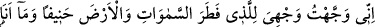
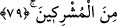

Yıldızların ve ayın batışı gibi güneş de “batınca” kavmine karşı ileri sürdüğü
delilleri güçlenmiş oldu. Fakat onlar yollarından dönmediler. İbrahim (a.s.), herkese
hitap edip onların önünde hakkı tasdik ederek “dedi ki: Ey kavmim, ben sizin” Allah’a
“ortak koştuğunuz şeylerden” bir var edene muhtaç olan putlardan ve yıldızlardan
“uzağım.”
Kavmi ona: “Peki sen neye ibadet ediyorsun?” deyince, İbrahim (a.s.) şöyle cevap
verdi:
79. Ben hanîf olarak, yüzümü gökleri ve yeri yoktan yaratan Allah’a çevirdim ve
ben müşriklerden değilim.
“Ben hanîf olarak” Bütün bâtıl dinleri bırakıp hak dîne yöneldim. Ki artık bundan
geriye dönüş yoktur. “yüzümü, gökleri ve yeri yoktan var edene çevirdim” dînimi ve
ibadetimi O’na has kıldım, kastımı yalnız O’na döndürdüm, O’na yöneldim. Gökleri ve
yeri yaratan Allah’a.
“Ve artık ben” ister fiillerle ister sözlerle olsun hiçbir hususta Allah Teâlâ’ya “ortak
koşanlardan değilim.” İşte bu hal, kalp aynasını kirden-pasdan arındıran, nefsin
arzularının tuzağına düşmekten korunan kimsenin halidir. Artık o, cisimlere ve kâinata
iltifat etmez. Hattâ sağa sola bakmaz. Çünkü, Allah’a dost olmanın şevki onu Hakk’ın
cihetten mukaddes olan zatının hizasına getirmiştir.
Mesnevî’de şöyle denilmiştir
Allah’ın emriyle açmışdır güneş
Ona Allah dersek, bu aptallık olur
Güneş tutulunca ne yaparsın?
O karaltıyı ondan sen nasıl giderirsin/alırsın?
Hakk’ın dergâhına yalvarmaz mısın?
“O karaltıyı götür, nurunu ona ver” diye
Gece yarısı öldürmeye kalksalar
Yalvaracağın ve eman dileyeceğin güneş nerede?
Hadiselerin çoğu hep gece olur
Halbuki o zaman ma’budun kaybolur
Doğrulukla Hakk’a eğilirsen
Yıldızlardan kurtulur, O’na mahrem olursun